Volume 15Chants de Noël et mélodies faciles41 morceaux · 54 pages
Volume 15Chants de Noël et mélodies faciles41 morceaux · 54 pages3,99 €Acheter
Piano Learning · PDF
564 morceaux · 1 933 pages de musique · 14 volumes · 10 langues
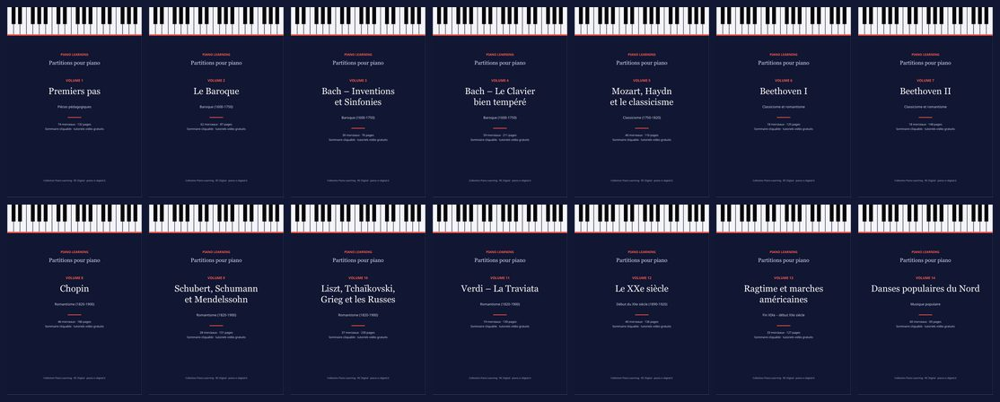
Les 14 volumes : 564 morceaux, 1 933 pages de musique.
55,86 €19,99 €−64%
Volume 15Chants de Noël et mélodies faciles41 morceaux · 54 pages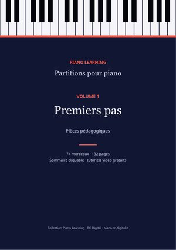
Volume 1Premiers pas74 morceaux · 132 pages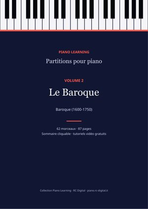
Volume 2Le Baroque62 morceaux · 87 pages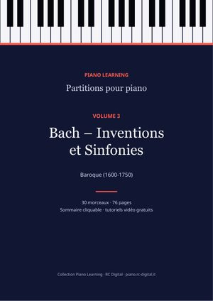
Volume 3Bach – Inventions et Sinfonies30 morceaux · 76 pages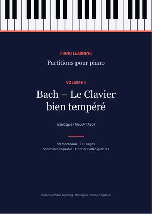
Volume 4Bach – Le Clavier bien tempéré59 morceaux · 211 pages Volume 5Mozart, Haydn et le classicisme40 morceaux · 116 pages
Volume 5Mozart, Haydn et le classicisme40 morceaux · 116 pages Volume 6Beethoven I18 morceaux · 125 pages
Volume 6Beethoven I18 morceaux · 125 pages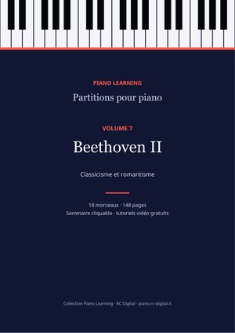
Volume 7Beethoven II18 morceaux · 148 pages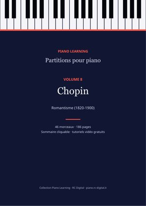
Volume 8Chopin46 morceaux · 186 pages Volume 9Schubert, Schumann et Mendelssohn28 morceaux · 151 pages
Volume 9Schubert, Schumann et Mendelssohn28 morceaux · 151 pages Volume 10Liszt, Tchaïkovski, Grieg et les Russes37 morceaux · 230 pages
Volume 10Liszt, Tchaïkovski, Grieg et les Russes37 morceaux · 230 pages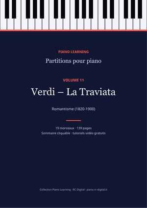
Volume 11Verdi – La Traviata19 morceaux · 139 pages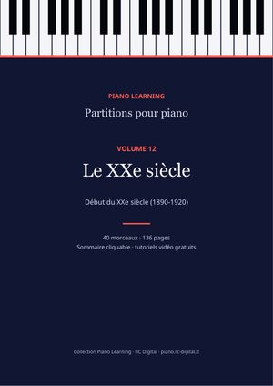
Volume 12Le XXe siècle40 morceaux · 136 pages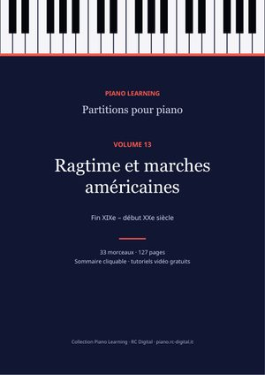
Volume 13Ragtime et marches américaines33 morceaux · 127 pages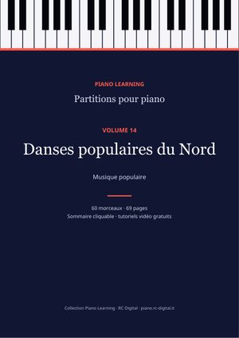
Volume 14Danses populaires du Nord60 morceaux · 69 pagesTouchez un titre dans le sommaire et vous êtes à la bonne page. Les signets sont là aussi.
Quelques lignes pour savoir qui a écrit la musique que vous jouez.
De la partition à la vidéo avec les notes qui tombent, pour chaque morceau qui en a une.
Avec un seul achat, vous téléchargez l'édition dans la langue de votre choix.
La première page de quatre morceaux de la collection. Touchez une page pour ouvrir le morceau.
En PDF. Vous pouvez les ouvrir sur ordinateur, tablette et téléphone, et les imprimer. Chaque volume est un seul fichier avec sommaire cliquable et signets.
Chaque achat comprend l'édition en 10 langues : italien, anglais, allemand, espagnol, français, portugais, russe, chinois, japonais et coréen. Vous téléchargez celle que vous préférez.
Juste après le paiement, la page de téléchargement s'ouvre et vous recevez un e-mail avec le lien. Chaque volume séparé est un PDF ; la collection complète est un fichier ZIP par langue avec les 14 PDF (environ 50 Mo).
Oui. Ce sont des éditions libres (domaine public ou Creative Commons) et les pages de ce site donnent le lien gratuit, morceau par morceau. Avec la collection, vous les avez toutes, classées par compositeur et par époque, avec sommaire, biographies, liens vers les tutoriels et les crédits complets de chaque édition.
Non. Le Volume 15, « Chants de Noël et mélodies faciles », s'achète séparément pour 3,99 €. La collection complète comprend les volumes 1 à 14.
Paiement sécurisé avec Payhip et téléchargement immédiat par e-mail. Les partitions sont des éditions libres (domaine public ou Creative Commons) : vous les trouvez aussi gratuitement, morceau par morceau, sur les pages de ce site ; ici, vous les avez toutes, classées dans un seul fichier, avec les crédits complets de chaque édition.